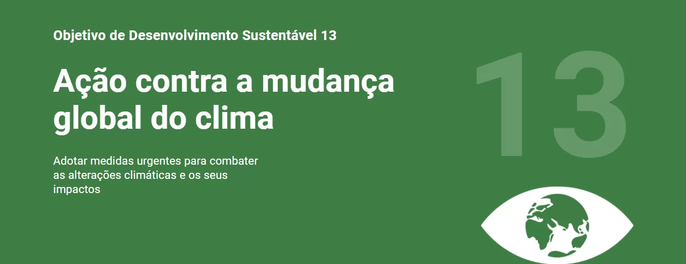

Adoção de medidas urgentes para combater as alterações climáticas e os seus impactos.
1.Reforçar a resiliência e a capacidade de adaptação a riscos relacionados ao clima e às catástrofes naturais em todos os países
2.Integrar medidas da mudança do clima nas políticas, estratégias e planejamentos nacionais
3.Melhorar a educação, aumentar a conscientização e a capacidade humana e institucional sobre mitigação, adaptação, redução de impacto e alerta precoce da mudança do clima
4.Implementar o compromisso assumido pelos países desenvolvidos partes da Convenção Quadro das Nações Unidas sobre Mudança do Clima [UNFCCC] para a meta de mobilizar conjuntamente US$ 100 bilhões por ano a partir de 2020, de todas as fontes, para atender às necessidades dos países em desenvolvimento, no contexto das ações de mitigação significativas e transparência na implementação; e operacionalizar plenamente o Fundo Verde para o Clima por meio de sua capitalização o mais cedo possível
5.Promover mecanismos para a criação de capacidades para o planejamento relacionado à mudança do clima e à gestão eficaz, nos países menos desenvolvidos, inclusive com foco em mulheres, jovens, comunidades locais e marginalizadas
Clique aqui e visite o site da ONU e saiba mais sobre a ODS 13 e as outras ações!